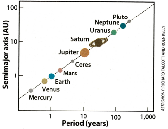

Problem 1
Derivation of Kepler’s Third Law for Circular Orbits
To derive the relationship between the square of the orbital period (\(T^2\)) and the cube of the orbital radius (\(r^3\)) for a body in a circular orbit, we start with the physics of circular motion and gravity.
How it works:

1. Gravitational Force as the Centripetal Force:
-
A body (e.g., a planet or satellite) in a circular orbit around a central mass (e.g., a star or planet) is held in place by gravity, which provides the necessary centripetal force to maintain circular motion.
-
The gravitational force between two masses \(M\) (central body) and \(m\) (orbiting body) is given by Newton’s law of gravitation:
where \(G\) is the gravitational constant, and \(r\) is the orbital radius (distance from the center of the central mass to the orbiting body).
- For circular motion, the centripetal force required is:
where \(v\) is the orbital velocity.
- Since gravity provides this centripetal force, we equate them:
2. Simplify the Equation:
- Cancel \(m\) (assuming \(m \neq 0\), which is true for any orbiting body):
- Multiply both sides by \(r\):
- Solve for \(v\):
3. Relate Velocity to Orbital Period:
- For a circular orbit, the orbiting body travels the circumference of the orbit (\(2\pi r\)) in one orbital period (\(T\)):
- Substitute this into the velocity equation:
4. Solve for the Period:
- Square both sides to eliminate the square root:
- Multiply both sides by \(T^2\):
- Multiply both sides by \(r\):
- Rearrange:
5. Final Form:
- This is Kepler’s Third Law for circular orbits:
where \(k = \frac{4\pi^2}{G M}\) is a constant for all bodies orbiting the same central mass \(M\).
Thus, the square of the orbital period is proportional to the cube of the orbital radius.
Implications for Astronomy
Kepler’s Third Law is a powerful tool with far-reaching implications:
1. Determining Planetary Masses:
- If \(T\) and \(r\) are measured for a satellite or moon orbiting a planet, and \(G\) is known, we can solve for \(M\):
- For example, by observing the Moon’s orbit around Earth, we can calculate Earth’s mass.
2. Measuring Distances:
- For planets orbiting the Sun, if we know \(T\) for one planet (e.g., Earth: 1 year, \(r = 1\) AU), we can use the law in ratio form to find \(r\) for another planet:
- This helped astronomers like Kepler determine relative distances in the Solar System.
3. Satellite Orbits:
- Engineers use this relationship to design satellite orbits. For geostationary satellites, \(T = 24\) hours, and solving for \(r\) gives an altitude of approximately 35,786 km above Earth’s equator.
4. Exoplanet Studies:
- Observing the period of an exoplanet’s orbit allows astronomers to estimate its distance from its star, aiding in habitability assessments.
Real-World Examples
How Kepler’s Third Law is Used in Astronomy:
Used in the graph are Distance from the sun(AU) and Orbital period (days).